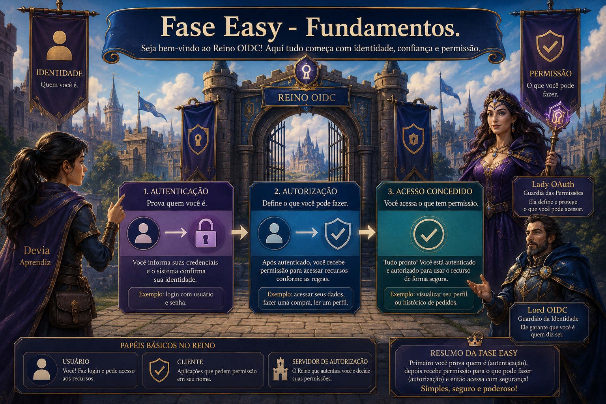
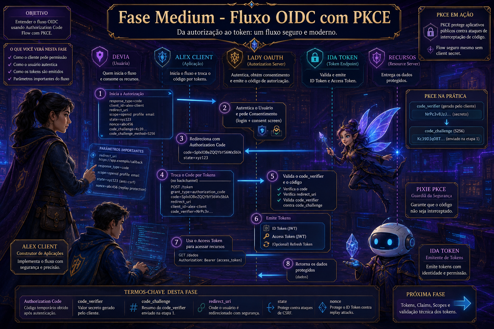
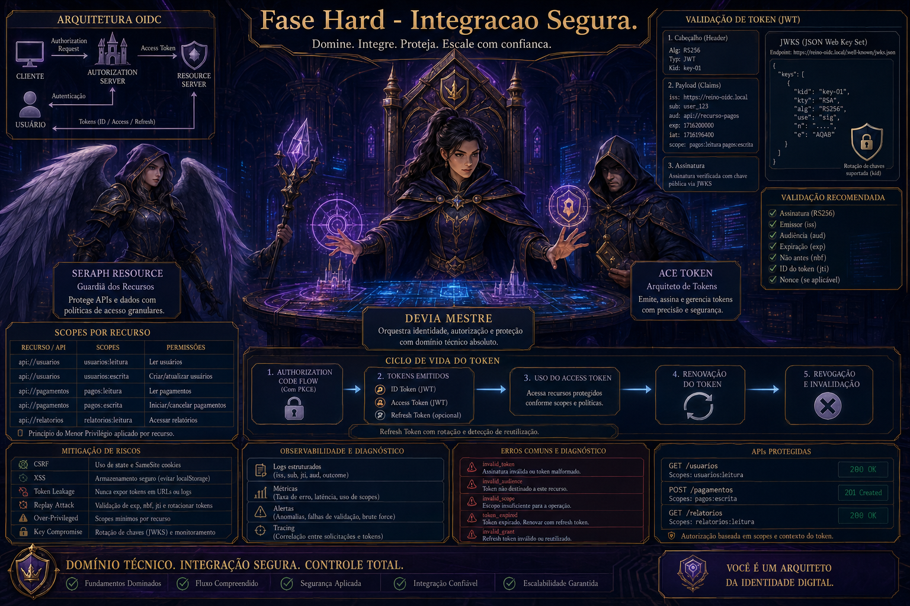

O que é o Reino OIDC?
Material educacional sobre OAuth 2.1 e OpenID Connect — você aprende identidade e login seguro na prática.
História, glossário, mapas técnicos e aplicativo Windows FREE. Para quem quer implementar ou entender login federado (Single Sign-On, tokens, LGPD). Upgrade opcional com certificação — R$ 29,90 (valor único).
Versão v2.0.0-RC1 · Imersão v2
Bem-vindo ao Reino da Identidade Federada
Imersão interativa sobre OAuth 2.1 e OpenID Connect Primeira entrega FREE.

Jornada imersiva local com evolução progressiva por fases e cenários OIDC.

Fase Easy
Base conceitual para entrada no protocolo.

Fase Medium
Fluxo OIDC e segurança em prática guiada.

Fase Hard
Domínio técnico aplicado em arquitetura real.
Os Personagens
Conheça os heróis e vilões desta saga.
Parte I — A Era das Senhas e a Chegada de Lady OAuth
Onde nasce o conceito de autorização.
Parte II — A Era da Confiança e o Mago OIDC
Onde a identidade ganha forma.
Parte III — A Nova Ordem Digital e a Aprendiz Devia
Onde tudo se integra em aplicações reais.
🌍 Mundo do Conhecimento
Guia técnico completo com conceitos, códigos e exemplos práticos.
🃏 Reino OIDC — Edição Super Trunfo
Proteja seu Reino: jogo de cartas com atributos Segurança, Complexidade, Escalabilidade e Privacidade (LGPD). Deck elite Mineração de Chaves.
🎓 Academia do Reino OIDC
Teste seus conhecimentos com flashcards interativos organizados em 3 caminhos de aprendizado.
📚 Glossário Ilustrado
Dicionário de termos técnicos explicados para leigos e especialistas.
📜 Mapa do Reino — Evolução
Dashboard onde as áreas acendem conforme você aprende. Desbloqueie o Trono para iluminar a Mineração de Chaves.
🗺️ Mapas Técnicos
Diagramas de arquitetura e fluxos visuais dos protocolos OAuth 2.1 e OIDC.
Conclusão
O desfecho da nossa saga.
👑 O Trono da Identidade
Upgrade do Reino OIDC: certificação e benefícios exclusivos. R$ 29,90 (valor único) — mesma inspiração de negócio do Minerador 4.0.
Pagamento via PIX; envie o comprovante e receba o acesso.
🏁 Conheça: Circuito Ferradura
Quer aprender lógica, ábaco romano e programação Python com uma trilha prática? Conheça o Circuito Ferradura, o curso da Cara Core para jovens entusiastas.
- Curso em HTML com 6 fases
- Lógica, ábaco romano e Python
- Acesso gratuito para pessoas físicas
- Certificado com verificação criptográfica
Curso pela Cara Core Informática — acesse em circuito.caracore.com.br